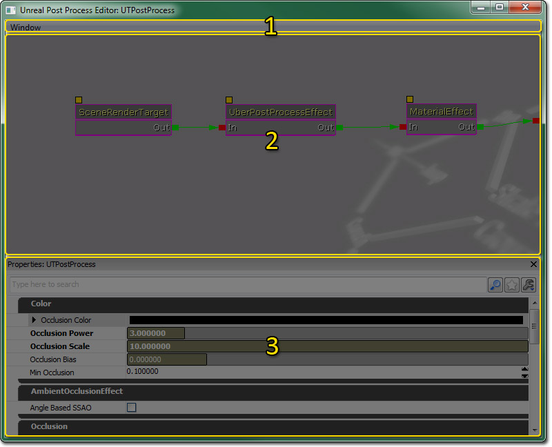
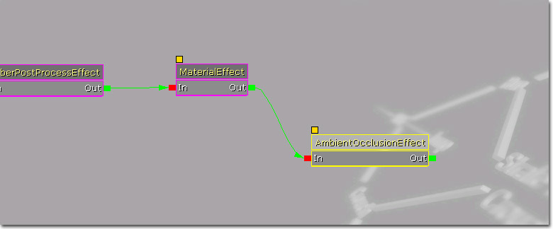

UDN
Search public documentation:
PostProcessEditorUserGuideJP
English Translation
中国翻译
한국어
Interested in the Unreal Engine?
Visit the Unreal Technology site.
Looking for jobs and company info?
Check out the Epic games site.
Questions about support via UDN?
Contact the UDN Staff
中国翻译
한국어
Interested in the Unreal Engine?
Visit the Unreal Technology site.
Looking for jobs and company info?
Check out the Epic games site.
Questions about support via UDN?
Contact the UDN Staff
UE3 ホーム > 「Unreal」エディタとツール > ポストプロセス エフェクトのためのユーザーガイド
UE3 ホーム > ポストプロセス エフェクト > ポストプロセス エフェクトのためのユーザーガイド
UE3 ホーム > ポストプロセス エフェクト > ポストプロセス エフェクトのためのユーザーガイド
ポストプロセス エフェクトのためのユーザーガイド
概要
ポストプロセス エディタを開く
ポストプロセス エディタのインターフェース

メニューバー
ウィンドウ
- プロパティ - プロパティのウィンドウ枠を表示します。
グラフペイン
ポスト プロセス エディタの心臓部です。右から左にポスト プロセス チェーンを表示します。インターフェースは、UnrealEd に備わっている、ノードをベースにした他のエディタの多くが用いているものと同じものです。デフォルトでは、SceneRenderTarget というノードが 1 つあります。これは、現在レンダリングされているシーンで、エフェクト (効果) は使われていません。新たなエフェクトをこのノードに追加することによって、オンスクリーンで表示されるものを変更することができます。コンテキストメニュー
エディタ内で右クリックするとコンテキストメニューをオープンし、グラフに追加できるノードを表示します:| 効果 | 説明 |
|---|---|
| MaterialEffect | ユーザが生成したマテリアル。 |
| MotionBlurEffect | オブジェクトの速度に基づくシーンのブラー。 |
| UberPostProcessEffect | DOF (被写界深度)、ブルーム、モーションブラー、 カラーグレーディング、トーンマッピングの組み合わせを最適化したものです。 |

プロパティペイン
プロパティペインでは、グラフペインの中で現在選択されているノードに関するプロパティが表示されます。これらのプロパティを編集することによって、ノードのエフェクトを修正し、最終的にはポスト プロセスのエフェクト全体を修正することができます。エフェクトの作成
デフォルト
[Engine.Engine] DefaultPostProcess=SomePackage.SomeEffect
PostProcessVolumes
補間期間
Matinee によってエフェクトを制御する
ゲームプレイスクリプトで制御する
ULocalPlayer.bOverridePostProcessSettings プロパティを使用して、現在プレイヤーに使用されているポスト プロセス値を変更することができます。そうすると、プレイヤーの FCurrentPostProcessVolumeInfo CurrentPPInfo 構造体に適する新たな値とその値に遷移するのに必要な補間時間が代入されます。